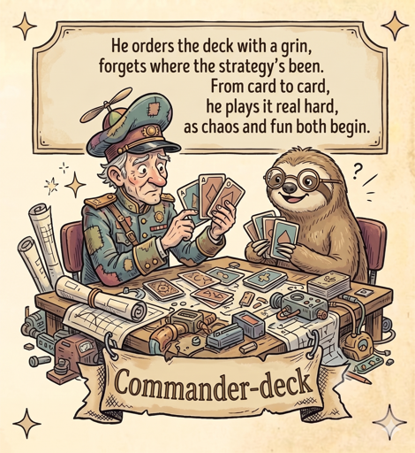

Command
Deck
fill the blanks · dry-run · execute — for the commands you forget every few days
guides
⚙
output
clear
✕
New template
Wrap each fill-in part in curly braces, e.g.
scp {file} {host}:{dest}
. Each
{token}
becomes a field.
Name
Category (existing or new tab)
Type
Command
Guide only
Description
Guide file (optional)
Command pattern
Dry-run flag (optional, e.g. -n). Leave blank if none.
Cancel
Save template
Settings
Templates are plain
.toml
files — one per tab — in the folder below. Edit them by hand, version them in git, sync them to the cluster.
Templates directory
Guides directory
Login shell (so SSH agent / PATH / ssh config resolve)
External terminal
Theme
Dark
Bright
Cancel
Save & reload
Guides
✕
Select a guide